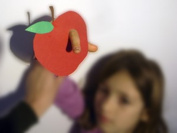

Wurm
Wer isst einen Apfel mit Wurm?



Wurfkastanien. Sie fliegen super und mit einem Ziel macht man ein Rennen.
Weiterlesen →
Hannah hat ihr eigenes Design gemacht. Herbstblätter mit ausgestanzten Monden, die sich im Wind bewegen.
Weiterlesen →
Los leotardos de mi hija, siempre se rompen por un sólo lado… ¡así que les hemos dado una función nueva! : hemos hecho unos perros para…
Weiterlesen →
Wegen des Erfolges der ersten Burg (post: juego sopla nubes), haben wir eine Zweite noch grössere gebaut.
Weiterlesen →
Mit einem Apfel und Fingerfarben hat man ein schönes Geschenkpapier.
Weiterlesen →
Krake Kleine Kinder können keine Perlen auf normale Fäden ziehen aber auf Draht schaffen sie das.
Weiterlesen →